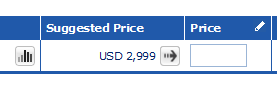

Sedoでドメインは売れるのか？
ドメインを300個ぐらい持っているのですが、管理できなくなってきたんで、いくつかを処分することにしました。ちょうど円安が加速してきていますので、タイミング的に今の時期が一番よいのではないかなと思います。
１ドル８０円台のときに、ある程度のお金を出して買ったものばかりですので、そのまま売ったとしても、だいたい２割増しで売れる計算になります。
処分している場所は、いつもはGODADDYを利用しておりまして、実はさっきも１個売れたのですが、世間一般では、どちらかというとSedoを利用している人が多いようです。また、最近、取引された高額なドメインもだいたいSedoで取引されているようです。
http://www.dnjournal.com/domainsales.htm
なので、Sedoで30個ほど出品してみたのですが、ここではまだ１個も売れてません。
このサイトで面白いのは、ドメインを出品しようとすると「Suggested Price」というのが表示される点です。「このぐらいの値段で出品すればいいんじゃね？」という示唆してくれるわけですが、たいていは200ドル、300ドル程度のケースが多いです。
私の持っているなかでは、一番高くて2,999ドル、あとは1,999ドルとか、そのぐらいの値段が多かったです。こんな感じで表示されます。

また、先日、tokyoドメインを買い漁っていたのですが、そのドメイン名もついでに出品してみました。だいたい、ほぼ原価で取得しているドメインばかりですので、20万円ぐらいで売れれば御の字なんですが、あわよくば100万とか、1000万円とかゲットできないかなーなんて思ってます。
最近のドメイン事情についてですが、ドメインバブルは既に終焉しているとは言われていますが、このSedoではないものの、今年は「Whisky.com」が３億円、「MI.com」が３億円で取引されたりもしているようです。
もう一度、ドメインバブルがやってこないとも限りませんので、資金に余力のある方は、投資対象としてドメインを買ってみるのもよいかもしれません。
人気の傾向としましては、やはり、.comドメインがダントツの人気物件となっているようです。特に、辞書に載っているような単語でのドメイン名や、ハイフンなしでの短いドメイン名の人気が高いもようです。
加えて、例えば「kakaku」は日本語、「price」は英語ですが、日本ではドメインに高額なお金を出す人はあまりいないようなので、英語のドメイン名を取得した方がチャンスの幅は広がるかもしれませんね。
【追記：】
実際の落札された際の移管手続きの手順については、こちらのページをご参照ください。
https://blog-tips.net/blog/domain/sedo-seller.html